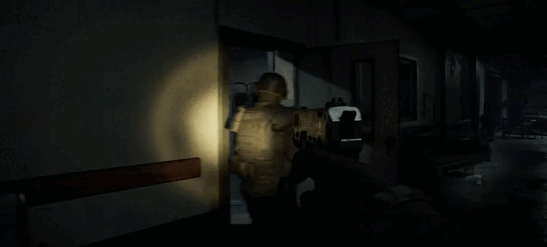
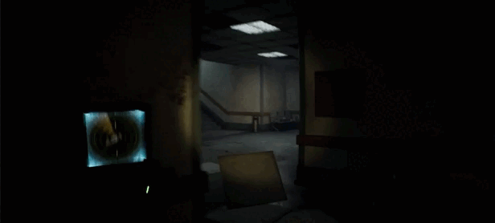
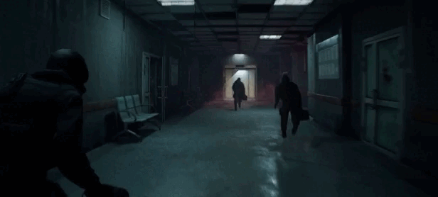

P.O.N. OS / VAC HANDSHAKE
USER CONFIRMATION REQUIRED
ENTER / SPACE / LEFT CLICK
Team VAC
LOADING
ERR_AUTH_LEVEL_INSUFFICIENT_LEVEL_04
[ ACCESS DENIED ]
Devci взломал тебя
перейдите на страничку P.O.N. и добавьте в вишлист для разблокировки
> SCANNING BIOMETRICS........ FAIL > CHECKING CLEARANCE......... FAIL > PROTOCOL 4:44 INITIATED > ATTEMPT LOGGED. TEAM VAC NOTIFIED.
P.O.N. OS / FOUND TAPE VISUALIZER
ARCHIVE_ITEMS 05 / SOURCE GIFPON
 TAPE_02 / RECOVERED_FILM_CUTFOUND FOOTAGEexcerpt from recovered P.O.N. tape / integrity unstable
TAPE_02 / RECOVERED_FILM_CUTFOUND FOOTAGEexcerpt from recovered P.O.N. tape / integrity unstable
TAPE_03 / RECOVERED_FILM_CUTFOUND FOOTAGEexcerpt from recovered P.O.N. tape / integrity unstable
TAPE_04 / RECOVERED_FILM_CUTFOUND FOOTAGEexcerpt from recovered P.O.N. tape / integrity unstable
TAPE_05 / RECOVERED_FILM_CUTFOUND FOOTAGEexcerpt from recovered P.O.N. tape / integrity unstableESC exits gallery / typing another tag returns to signal map